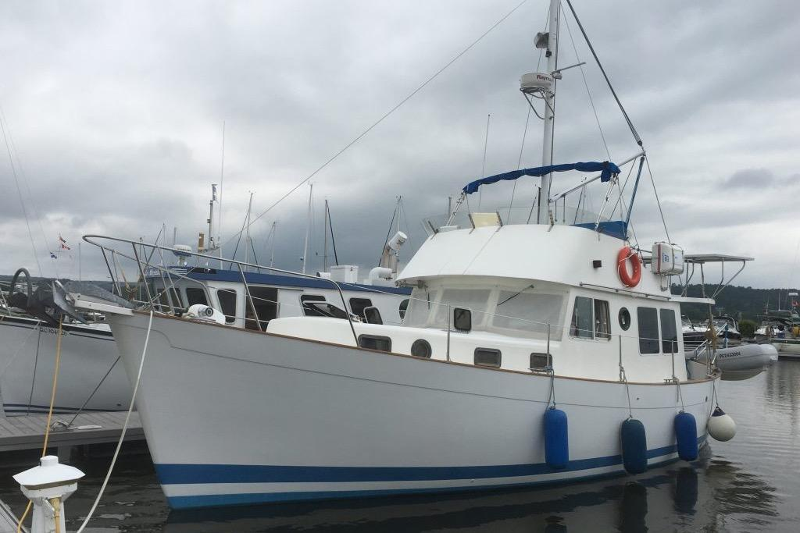

B-Atlas Boat Guide · WILL-40-NO
Willard Vega 40 Nomad Widebody Flybridge Sedan
1973–1977
The Willard 40 Vega Nomad belongs to Willard Marine’s early production-fiberglass cruising lineage. These heavy, economical boats use displacement hulls and simple diesel propulsion, with the Vega families offered in materially different sedan, pilothouse and motorsailer configurations.

- LOA
- 40 ft
- LWL
- Unknown
- Beam
- Unknown
- Draft
- Unknown
- Hull behaviour
- Displacement
- Fuel
- Diesel
- Propulsion
- Shaft
- Engine configuration
- Single inboard; verify installation
- Boat family
- Trawler
- Construction
- Solid-fiberglass displacement hull with fiberglass-over-plywood widebody superstructure; later Willard 40 models used molded cored-fiberglass superstructures and walk-around side decks
Best for
- Owners who value simplicity, efficiency and traditional displacement behavior
- Restoration-minded buyers seeking historically significant fiberglass trawlers
- Slow coastal and inland cruising where speed is secondary
Trade-offs
- Very low cruising speeds compared with semi-displacement alternatives
- Many examples are now restoration-age boats with decades of owner modifications
- Interior and deck configuration varies substantially by Vega version
Known concerns
- No model-specific concern has been promoted to B-Atlas’s evidence threshold. This does not mean the model has no age-, condition- or hull-specific risks.
Inspection focus
- Confirm exact Vega model/version and hull number from documentation
- Inspect deck/superstructure cores or fiberglass-over-plywood areas appropriate to production period
- Inspect tanks, wiring, exhaust, cooling and original plumbing for age-related deterioration
- Inspect shaft, rudder, keel and steering systems
- Review structural and systems modifications made over the boat’s long service life
Continue researching
Related boat models
Willard Vega 36 Standard Cruiser Flybridge Sedan
36 ft · Displacement
Willard Vega 30 Voyager Raised Pilothouse
30 ft · Displacement
CHB 40 Double Cabin
40 ft · Semi-Displacement
DeFever 40 Offshore Cruiser Offshore Cruiser
40 ft · Semi-Displacement
Island Gypsy 40 Classic Classic
40 ft · Semi-Displacement
Marine Trader 40 Double Cabin
40 ft · Semi-Displacement
About this record
B-Atlas preserves uncertainty: missing information remains unknown rather than being treated as a negative. Specifications and guidance describe the model record; individual boats can differ by year, equipment, refit and condition.